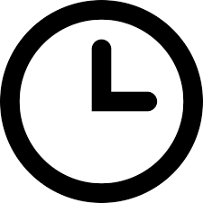

Home Training Package
Chest exercise
집에서도 충분히 갑빠 만들 수 있다!
제일 중요한 점은 꾸준하게 하는 것 입니다.
클릭한 영상을 본인이 할 수 있는한 최대한 열심히 따라합니다.
짧은 영상에 대해 운동량이 부족하면 같은 영상으로 한번 더 반복해도 좋습니다.

10 ~ 30min
주 2회
기구가 없을 때
"10분 만에 집에서 가슴 작살내는 루틴"
"10가지 푸쉬업으로 10분안에 가슴완성하기!"
"완벽한 가슴을 위한 가장 효과적인 푸쉬업 6가지 "
"강력한 어깨를 만들어줄 홈트 (중급자 추천)"
"5가지 푸쉬업으로 가슴운동"
"중상급자 가슴근육이 웅장해지는 루틴"
기구가 있을 때
"덤벨하나로 조지는 파트너 가슴운동"
"'가슴'운동 집에서도 충분히 할 수 있다!"
"집에서 덤벨로 할 수 있는 가슴운동루틴"